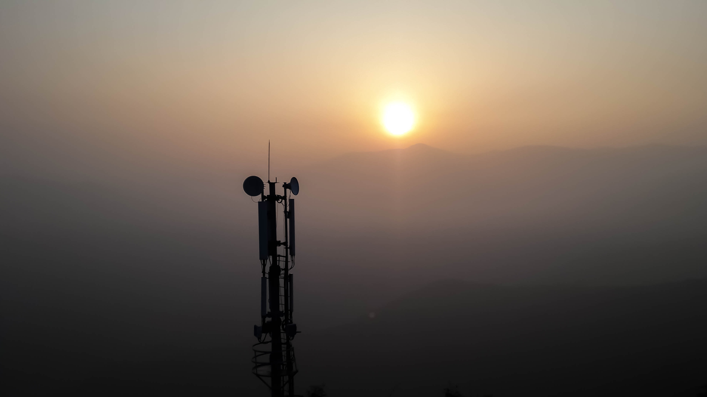
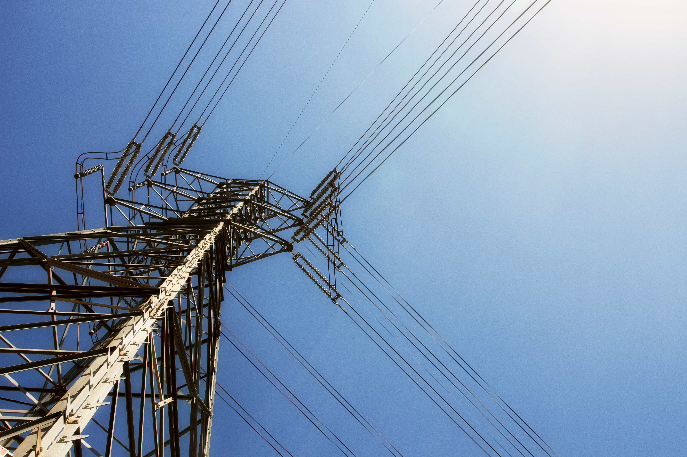
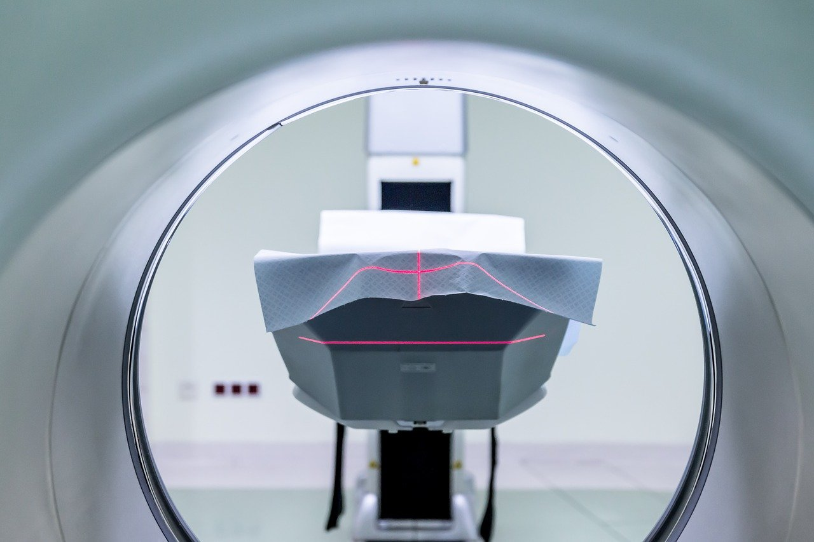

Program Studi

Terdapat enam program studi sarjana yang ada di STEI:
Keenam program studi sarjana ini berada di bawah naungan tiga himpunan mahasiswa:
- Himpunan Mahasiswa Informatika (HMIF) yang menaungi program Teknik informatika dan program Sistem dan Teknologi Informasi
- Himpunan Mahasiswa Elektroteknik (HME) yang menaungi program Teknik Elektro dan program Teknik Tenaga Listrik
- Ikatan Mahasiswa Teknik Telekomunikasi ITB (IMT "Signum" ITB) yang menungi program Teknik Telekomunikasi

Jalur penjurusan ditentukan oleh indeks prestasi yang diperoleh selama Tahap Persiapan Bersama, atau ditentukan melalui pilihan penjurusan khusus jalur SNMPTN atau SM ITB.
Selain itu, terdapat dua program pascasarjana yaitu program pascasarjana Informatika dan Teknik Elektro, serta program doktoral Teknik Elektro & Informatika.
Teknik Informatika

Teknik Informatika adalah jurusan yang membahas algoritma dan pengembangan perangkat lunak untuk mengolah informasi.
Teknik Informatika diawali dengan penggunaan komputer di ITB sebagai alat bantu, lalu kemudian berkembang dengan dibukanya penjurusan program studi komputer tahun 1978.
Lulusan Teknik Informatika mempunyai prospek kerja yang luas di abad ke-21, seperti menjadi pengembang software, game, atau website untuk memajukan kualitas hidup dan bagaimana suatu informasi dapat diolah atau ditampilkan. Selain itu, lulusan Teknik Informatika mampu menjadi perancang sistem artificial intelligence,
dan petanggung jawab atau perancang sistem database. Teknik Informatika juga berkaitan dengan beberapa program-program studi lainnya, dalam hal penyampaian atau pengolahan informasi.
Teknik Elektro

Teknik Elektro adalah program studi yang membahas desain dan aplikasi dari peralatan dan sistem yang menggunakan prinsip kelistrikan dan keelektromagnetisman. Lulusan Teknik Elektro biasanya
mempunyai potensi kerja yang luas karena versatilitas dan cakupan bidang yang banyak. Lulusan Teknik Elektro dapat terlibat dalam penelitian sistem kontrol, teknik biomedis, desain sistem komputer,
tenaga listrik, dan lain-lain. Beberapa dari disiplin ini juga bisa digabungkan dengan disiplin-disiplin teknik lainnya menghasilkan spesialisasi-spesialisasi baru, seperti nanoteknologi, elektrokimia, energi terbarukan, mekatronika dan sains material listrik.
Teknik Telekomunikasi

Apabila Teknik Informatika membahas bagaimana informasi diolah, Teknik Telekomunikasi membahas bagaimana informasi dapat disampaikan. Teknik Telekomunikasi membahas tentang jaringan komputer, bidang telekomunikasi wireless dan informasi komputer, dan perkembangan Internet.
Teknik Telekomunikasi memiliki peran penting dalam memajukan infrastruktur Internet di era globalisasi. Teknik Telekomunikasi menggabungkan elemen-elemen dari teknik elektro, teknik komputer dan teknik sistem, untuk mengembangkan sistem-sistem telekomunikasi. Insinyur telekomunikasi juga biasa
bekerja untuk mengembangkan sistem komunikasi data dan suara, kompresi dan enkripsi data.
Sistem dan Teknologi Informasi
Program Studi Sistem dan Teknologi Informasi sering dianggap "identik" dengan Teknik Informatika, namun program studi ini membahas pengetahuan teoretikal di statistika, analisis sistem, teori sistem dan perancangan sistem pengolahan infomrasi. Program studi ini lebih berfokus pada perencanaan, pengembangan, dan evaluasi sistem yang menjadi solusi persoalan pengelolaan informasi bagi organisasi. Program studi ini mempunyai capaian
pemahaman atas dinamika persoalan sistem, analisis dan sintesis suatu persoalan, adaptasi dan interaksi dengan penggunaan, dan penguasaan aspek interaksi dalam sistem multi-dimensi.
Teknik Tenaga Listrik

Program Studi Teknik Tenaga Listrik membahas bidang pembangkitan, pengiriman, dan penggunaan energi listrik. Program studi ini
berada di rumpun yang sama dengan program studi Teknik Elektro dalam skala transfer tenaga dalam skala besar. Program studi ini membahas tentang efisiensi dari energi dan pengembangan Teknologi
untuk mencapai konversi energi primer ke listrik yang efisien.
Teknik Biomedis

Teknik Biomedis terkhususnya di ITB masih berada di bawah rumpun Teknik Elektro, lebih tepatnya penerapan dari ilmu teknik elektro dalam bidang medis. Teknik Biomedis membahas mengenai penggunaan konsep elektro
dalam pembuatan alat-alat elektronik untuk memenuhi kebutuhan medis. Program studi ini dikembangkan sebagai antisipasi terhadap perkembangan sistem elektronika kedokteran dan teknologi kesehatan.